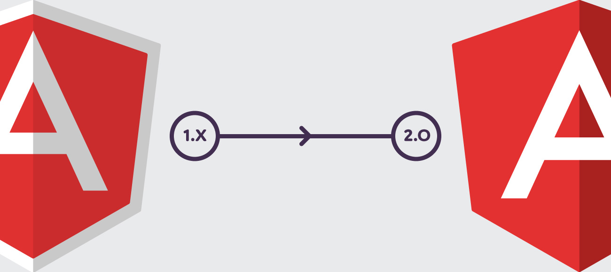

Angular 강좌(1) - Introduction
Angular 강좌는 여러 절로 구성되어 있습니다.
- Angular 강좌(1) - Introduction
- Angular 강좌(2) - 개발환경세팅
- Angular 강좌(3) - Component
- Angular 강좌(4) - Angular Material
- Angular 강좌(5) - 실습(1)
- Angular 강좌(6) - Data Binding
- Angular 강좌(7) - 실습(2)
- Angular 강좌(8) - Material Table
- Angular 강좌(9) - 데이터공유(@Input)
- Angular 강좌(10) - 데이터공유(@Output)
- Angular 강좌(11) - 데이터공유(@ViewChild)
- Angular 강좌(12) - 데이터공유(Content Projection)
- Angular 강좌(13) - Service
- Angular 강좌(14) - Service Mediator Pattern
- Angular 강좌(15) - Service RxJS
- Angular 강좌(16) - Material Table Event
- Angular 강좌(17) - 중간 정리
- Angular 강좌(18) - Directive
- Angular 강좌(19) - Pipe
- Angular 강좌(20) - Component Lifecycle
Angular Version
Angualr의 History와 개요부터 간단하게 살펴보겠습니다.
Angular는 JavaScript based Open Source Front End Web Application Framework 입니다.
초기 버전인 AngularJS는 2010년 발표되었습니다. 지금은 Angular 1이라고 표현하기도 합니다.
버전 정책이 AngularJS 1.x로 올라가는 것이죠. 그렇게 발전해오다가
2016년 9월에 Angular 2가 정식으로 release되었습니다. 그러면서 Angular 2라고 명시하지 않고 Angular라는 이름으로 호명하기로
결정합니다. 지금 우리가 Angular라고 부르는 것은 모두 Angular 2 이후 버전입니다. 2017년 3월에 Angular 4가 release되었고
현재(2018년 1월)기준으로 Angular 5 까지 나온 상태입니다.
2017년 12월 3일부로 다음의 사항들이 정식으로 release되었습니다.
- Angular 5.1.0
- Angular CLI 1.6.0
- Angualr Material
- Angular Material CDK(component dev kit)
정리를 하자면 AngularJS라고 표현되는 Angular 1은 버전이 AngularJS 1.0, AngularJS 1.1, AngularJS 1.2, … 이렇게
올라가고 Angular라고 표현되는 Angular 2는 버전이 Angular 2.x.x, Angular 3.x.x, Angular 4.x.x, … 이렇게 올라갑니다.
Angular 3는 Router issue때문에 release가 최소되었습니다. 그래서 Angular 2 다음 Major 버전이 Angular 4가 됩니다.
2017년 11월에 release된 Angular 5는 Angular 2의 3번째 Major 배포판 이라는 말이지요.
Angular는 유의적버전(SemVer)을 도입해서 버전 체계를 Major.Minor.Patch로 표현합니다. 즉, Angular 5.2.4 이렇게 표현하는
것이지요. 6개월을 기준으로 1회의 Major, 3회의 Minor 그리고 주단위로 패치가 실시되고 있습니다. Major Release는 Breaking Change
가 포함될 수 있습니다. Breaking Change란 이전버전과 호환성이 없는 변화를 지칭합니다. 따라서 시간이 좀 지나면 지금의 Angular와
또 많이 다른 모습의 Angular가 될 확률도 있습니다. 물론 Google에서는 가능한 그런 경우를 없앤다고 발표했지만 모를일이죠.
기존의 AngularJS와 지금의 Angular는 Architecture측면이나 구현측면에서 큰 차이가 있습니다. 그렇기 때문에 Angular 2
architecture가 발표되었을 때 많은 AngularJS 개발자들이 황당해 했던것도 사실입니다. 여하간 AngularJS는 역사속으로 사라지고 있습니다.
사실 Google에서도 AngularJS 시절에는 내부적으로 AngulraJS를 사용하지 않았습니다. 하지만 Angular로 넘어오면서 자사의 개발자체도
Angular로 진행하고 있고 Angular를 단지 web framework에서만 사용하는 기술이 아닌 모든 platform에 대응할 수 있는 형태로
발전시키고 있습니다.
다음은 기존의 AngularJS와 지금의 Angular의 중요 차이점 중 몇가지 입니다.
- AngularJS의 Controller와 $scope 기반 개발방식에서 Angular의 컴포넌트 기반 개발방식(
CBD, Component Based Development)으로 개발방법 변경되었습니다.- Angular의 주력 개발 언어로
TypeScript가 도입되었습니다.- Angular는 개발환경 지원도구인
Angular CLI를 제공합니다.
이외에도 더 많지만 일단 저 위의 3가지만 기억하시면 될 듯 합니다. 저 위의 3가지로 인해 개발 생산성과 성능면에서 큰 향상을
이루었습니다. 하지만 결정적(?)인 단점이 있습니다. Angular는 대부분의 browser를 지원하고 있는데 IE의 경우 9버전 이상부터
지원합니다. 따라서 Cross Browsing의 issue를 가지고 있습니다.
아참..로고도 바꾸었습니다. 테두리가 있는 방패모양의 로고에서 테두리를 빼고 A글자를 흰색으로 바꾸었습니다. ^^;;

이 링크를
클릭해 보시면 Angular의 버전 업데이트에 대한 ChangeLog를 확인할 수 있습니다.
일 무지 열심히 하네요. 따라가기 힘들정도입니다.
Angular 학습을 위한 pre-requisite
Angular는 Steep Learning Curve를 가집니다. 배우기가 힘들다는 거죠. 적어도 기본적인 JavaScript 개발에 대한 지식과
TypeScript에 대한 지식, 그리고 객체지향개발(OOP)에 대한 지식을 필수로 요구합니다. 물론 Angular를 배우면서 같이 하면
되긴 하지만 힘든건 사실입니다.
해서 Angular 강좌 역시 기본적으로 다음과 같은 선행지식을 필요로 합니다.
- JavaScript
- TypeScript
- OOP(Object Oriented Programming)
- Front End 개발 도구 ( npm, babel, webpack, gulp 등등)
참고로 이 링크에 가보시면 현재 Front End 개발환경에 대한 간단한 포스트를 보실 수 있습니다. 또한 이 링크에 가보시면 TypeScript에 대한 강좌 역시 보실 수 있습니다.
말은 어렵다고 했지만 하다보면 또 그냥 저냥 하게 됩니다. 일단 기본적인 소개는 이정도로 하고 개발환경부터 세팅해 보도록 하겠습니다.
End.
Angular 강좌는 아래의 책과 사이트를 참조했습니다. 조금 더 자세한 사항을 알고 싶으시면 해당 사이트를 방문하세요!!
- Angular Official HomePage
- Angular Material Official HomePage
- Build a Mobile App with Angular 2 and Ionic 2
- Angular 첫걸음 - 한빛미디어
- 제대로 배우는 Angular 4 - 비제이퍼블릭